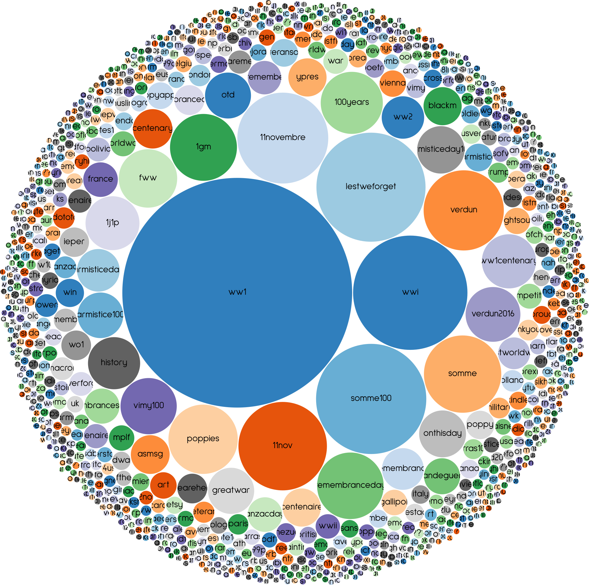
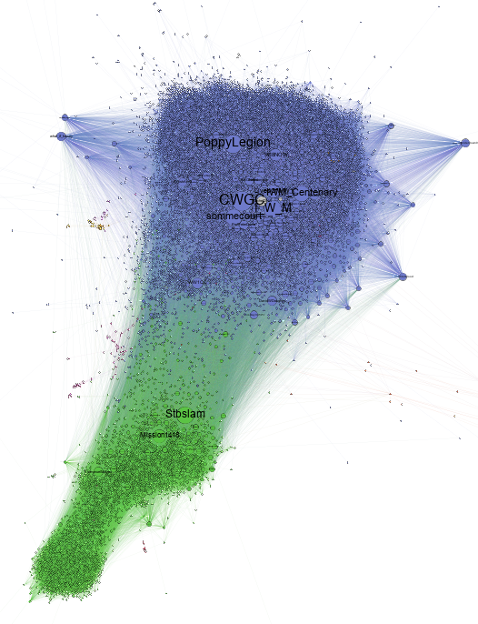

Une mémoire collective à haute fréquence
?
Propositions méthodologiques et critiques pour l’étude des
échos de mémoire collective sur les réseaux sociaux
numériques
Frédéric Clavert,
C2DH, Université du Luxembourg. frederic.clavert@uni.lu
3/4/2023. Colloque des étudiants du CRIHN: « la mémoire en humanités numériques »
histoire des relations internationales / histoire numérique / memory studies
#ww1 / #covid19fr / awac2
Introduction: #Verdun100

Mémoire et commémoration à haute fréquence
- Twitter comme espace de circulation de l’information à haute fréquence (retweet, mention, quote, etc)
- Soubresauts de cette haute fréquence: ‘vibrations’;
→ mémoire collective comme interaction (résultant de liens sociaux) entre stock et circulation d’informations : la haute fréquence ne peut qu’avoir des conséquences sur la mémoire collective et sur les modes de commémoration.
Halbwachs ([1925] 1994) / Boullier (2016) (EN) / Boullier (2015) (FR).
De #ww1 à #covid19fr
Un usage classique des méthodologies numériques

Collecter 9 millions de tweets
#ww1:
- 9 millions de tweets (2014-2019)
- deux tiers de retweets
- 1.5 million de comptes Twitter
- collecte: Twittter API v1.1
- streaming
- mots-clés / hashtags
- modification des hashtags au fur et à mesure de la collecte
- émergence de hashtags (été 2014 : #1j1p)
- hashtags non prévisibles à lavance (#somme100)
Surveiller et anticiper
- Surveiller sa base de données
- Apparition de hashtags
- Absence de hashtags: Marne, Jaurès, Clémenceau…
- Surveiller son terrain
→ anticiper
Quelques analyses




Quels types d’analyse effectuer?
- iramuteq / gephi
- topic modelling / analyse réseaux
- avoir un oeil sur les méthodes émergentes (qui deviennent bien
rôdées)
- word embeddings
bricolage, braconnage
bricolage? Le cas du projet #covid19fr
- 15 mars 2020: reprise du serveur #ww1 pour collecter des données sur la crise sanitaire en cours
- Base de données de 65 millions de tweets (la moitié sur mars-juin
2020)
- collecte stoppée depuis le 15 mars 2023 (Elon Musk, fin de l’APIv1.1)
- Objectif: collecte de très long terme
- quels aspects de la crise deviendront mémoire collective?
→ réutilisation d’un savoir-faire antérieur.
bricolage: la fluidité des outils numériques
- la base de données n’a pas (ou peu) servi
- sortie de l’APIv2 et de l’academic product track
→ Utilisation de twarc,
collecte de corpus ad hoc (fonction de
l’article et de sa question de recherche)
Commémorer en confinement: 8 mai et 25 aprile
- corpus italophone (25 aprile) et francophone (8 mai) sur les commemorations de la fin de la Seconde Guerre mondiale
- bases techniques de collecte très différentes
- donc des biais différents: lissage des controverses
- lien IRL / online très fort
- la comparaison entre les deux corpus montre deux manières de commémorer très différentes
- traditions différentes
- traditions différemment adaptées au confinement
Clavert and Paci (to be published)
bricolage + fluidité des dispositifs socio-techniques
↓
deux manières de collecter des tweets / deux recherches différentes
du bricolage au braconnage
- Bricolage → s’adapter pour survivre
- Braconnage → contourner pour s’adapter pour survivre
Que faire quand l’accès aux données est coupé, quand un outil que
l’on maîtrise n’est plus développé,
quand une institution bloque
l’accès à des données, des outils, des coopérations?
Comment
équilibrer les impératifs (légitimes) de la protection des données et
ceux de la recherche?
braconnage
Le braconnage est une configuration où la recherche est un étroit chemin de crête entre deux océans d’illégalité (et d’illégitimité):
- éthique et données personnelles;
- respect des conditions d’accès aux données.
Conclusion
- proposition méthodologique hybride / adaptée au corpus, à la
recherche menée
- hybride car pluridisciplinaire
- hybride car scalable reading – impliquant de garder un lien aux sources primaires
- proposition qui s’accompagne de la notion de bricolage: s’adapter à
l’évolution des outils que nous utilisons
- peut aller jusqu’au braconnage
bricolage, braconnage, sabotage?
Quand est-ce que bricoler, braconner ne devient plus possible?
Quand est-ce qu’il faut saboter ses propres recherches?
Comment étudier la mémoire collective
« à haute fréquence »?
Boullier (2023) / Clavert and Fickers (2021) / Floridi (2014)